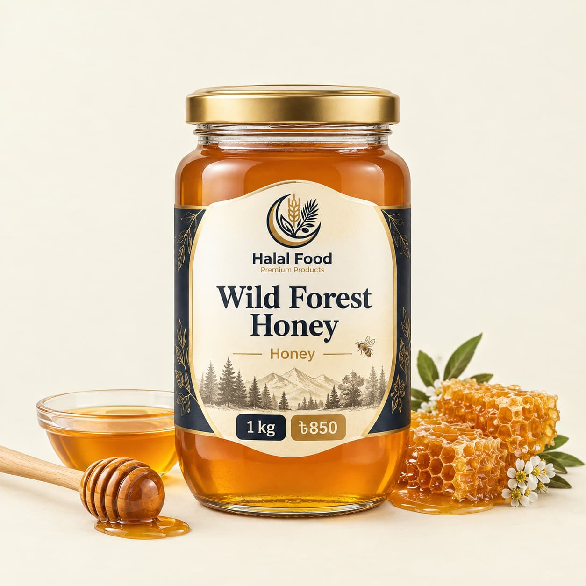

Blog / Honey
Wild Forest Honey in Bangladesh: Price, Purity and How to Buy the Real Thing

Wild forest honey in Bangladesh has a special place in many homes. People buy it for its rich taste, for tradition, and because it comes from the forest and not from a bee box. But it is also one of the foods that gets copied most often. A buyer who does not know what to check can pay a high price for plain sugar syrup. In this guide, we explain what wild forest honey is, how it is different from farm honey, what a fair price looks like, how to spot bad honey, and how to store and use it.
Quick answer: Wild forest honey is collected from the combs of wild bees in forests, and in Bangladesh the best-known source is the Sundarbans. It usually costs more than farm honey, and its taste changes with the flowers and the season. Simple home tests are not reliable, so the safest way to buy is from a trusted seller who is open about the source, the season and the pack details.
What Is Wild Forest Honey?
Wild forest honey is honey that wild bees make in the forest. Collectors go into the forest, find the combs and take out the honey. This is different from farm honey, where bees live in boxes that a beekeeper looks after.
Because the bees fly freely and visit whatever flowers are in bloom, wild honey does not have one fixed taste. Its colour, smell and flavour change with the place and the season.
Wild Forest Honey vs Farm Honey
| Point | Wild forest honey | Farm (cultivated) honey |
|---|---|---|
| Bees | Wild bees in the forest | Bees kept in boxes by a beekeeper |
| Flowers | Forest flowers, which change with the season | Often one main crop, such as mustard or litchi |
| Supply | Limited, and mostly seasonal | More steady through the year |
| Taste | Varies, and is often stronger and more complex | More even from batch to batch |
| Price | Usually higher | Usually lower |
Where Does Wild Honey Come From in Bangladesh?
Honey in Bangladesh comes from managed beekeeping, which is linked to the mustard flowering season, and from regulated wild harvest in the Sundarbans mangrove forest. The main source of natural honey is the Sundarbans, and some also comes from hilly areas. Source: Tridge and BDStall honey listings.
Honey collectors in the Sundarbans take the honey from the flowers of kholsha, goran and bain trees. Collectors enter the forest only after getting permission from the forest department. This matters because the harvest is limited, which is one reason real wild honey is not available in unlimited amounts. Source: The Business Standard.
Sundarbans honey was also registered as a Geographical Indication (GI) product in Bangladesh, which gives the name official recognition. Source: Dhaka Tribune.
Is Wild Honey Healthier?
Honey is a natural food and many people enjoy it for its taste and tradition. But it is still mostly sugar. One tablespoon has around 60 calories and about 17 g of sugar.
There is no strong proof that wild honey is far healthier than farm honey. Honey is not a medicine, and it cannot replace a doctor’s advice. Enjoy it for its taste and keep your portion small, like you would with any sweet food.
Real vs Fake Honey: What to Check
Bad honey is a real problem in Bangladesh and in the rest of the world. A common way to make fake honey is to mix sugar solution or other syrups into it. Honey can also be wrongly labelled, with a false name for the flower source. And some unscrupulous traders sell cheaper, more easily available honey in the name of Sundarbans honey. Source: research review on honey adulteration.
An honest warning about home tests. Many videos show tricks such as a drop of honey in water, a flame test or a thumb test. These are not reliable. Some real honey fails them, and some good fakes pass them. A Bangladeshi study found that lab tests, such as measuring the protein content, can show the difference between pure and adulterated honey. A lab is the only way to be sure. Source: research review on honey adulteration.
Since you cannot test honey at home, use these practical checks:
- Know the source. A good seller can tell you where the honey came from, in which season it was collected, and how it was packed.
- Check the price. Real wild honey takes effort to collect, so a very cheap price is a warning sign.
- Smell and taste. Real honey has a natural flower-like smell and a layered taste. Fake honey often tastes only sweet, flat or like burnt sugar.
- Read the pack. Look for the net weight, the packing date, the seller details and a clear ingredients line that says only “honey”.
- Do not panic about crystals. Real honey can become thick or grainy over time. This is natural. It does not mean the honey is fake.
- Buy from a trusted shop. A seller who answers questions clearly and has good reviews is safer than an unknown seller with no details.
Wild Forest Honey Price in Bangladesh
Honey prices change with the type, the season, the pack and the seller. Here are some guide figures:
- One Bangladeshi price site said farm honey, mainly from mustard flowers, starts at around Tk 500 per kg, and raw natural Sundarbans honey starts at around Tk 800 per kg. Its July 2026 list showed 1 kg of pure Sundarbans honey at Tk 1,200. Source: BDStall.
- When Sundarbans honey received its GI recognition, garan honey was selling at Tk 900 to 950 per kg, and different types of khalisha honey were selling at Tk 1,100 to 1,200 per kg. Source: Dhaka Tribune.
So a real price for wild forest honey is usually well above the price of farm honey. These are only guide numbers. Always compare the same type, the same weight and the same season.
How Much Honey Should You Eat?
For most healthy adults, one to two teaspoons a day is a sensible amount. Honey has a lot of sugar, so count it as part of your daily sugar and not as an extra.
Please be careful in these cases:
- Babies under 12 months must not eat honey. It can carry a bacteria that is dangerous for infants. This applies to all types of honey, including wild honey.
- People with diabetes or high blood sugar should ask their doctor before they add honey to their daily food.
- People with pollen or bee allergies should be careful, because honey can contain traces of pollen.
How to Store Honey
Honey stays good for a long time when it is stored well.
- Keep it in a clean, dry, airtight jar or bottle.
- Store it at room temperature, away from direct sunlight and heat. It does not need the fridge.
- Always use a clean, dry spoon. Water or wet spoons can make honey spoil.
- If the honey turns thick or grainy, put the closed jar in a bowl of warm water for a while. Do not boil it, because very high heat can spoil the taste.
Easy Ways to Use Wild Forest Honey
- In warm water or tea as a sweetener, once the drink has cooled a little
- On bread, roti or paratha for a quick breakfast
- In yoghurt or oats, with some nuts on top (see our Nuts and Seeds collection)
- With fruit, for a simple dessert
- For home mixes, such as our garlic honey mix
- As a gift, in a clean glass jar for Eid or a family visit
Frequently Asked Questions
What is wild forest honey?
It is honey made by wild bees in the forest and collected from their combs. In Bangladesh, the best-known source is the Sundarbans.
Is wild honey better than farm honey?
It is different, not always better. Wild honey often has a stronger, more complex taste and costs more, because the supply is limited. Both are mostly sugar and should be eaten in small amounts.
How can I tell if honey is pure?
Home tests are not reliable. The safest way is to buy from a trusted seller who gives clear details about the source and the pack, and to be careful with very low prices.
Why does real honey crystallise?
Honey is a thick sugar solution, and over time the sugar can form crystals. This is natural and does not mean the honey is fake. Warm it gently to make it smooth again.
Can children eat honey?
Children over 12 months can eat a small amount. Babies under 12 months must never eat honey.
Can I buy wild forest honey online in Bangladesh?
Yes. You can order from the Halal Food Honey collection and get it delivered to your home.
Final Thoughts
Wild forest honey is a special food with a rich taste and a strong link to the forest. But the market also has a lot of fake and wrongly labelled honey, so it pays to be careful. Buy from a seller who is open about the source, compare prices with the same type and weight, and enjoy honey in small amounts. That way, you get the real taste without paying for sugar syrup.
Ready to order? Visit our Honey collection and choose the honey that suits you.